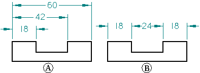
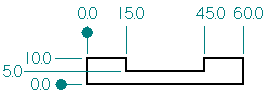
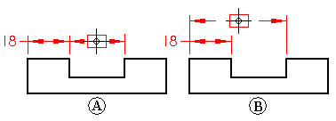

Dimension groups
You can place dimensions in dimension groups with the following commands:
-
Distance Between
-
Angle Between
-
Symmetric Diameter
-
Coordinate Dimension
This makes the dimensions easier to manipulate on the drawing sheet. All members of a stacked or chained dimension group share the same dimension axis.

|
(A) |
Stacked dimension group |
|
(B) |
Chained dimension group |
A coordinate dimension group is another type of dimension group. Coordinate dimensions measure the position of key points or elements from a common origin. All the dimensions within the group measure from a common origin. You should use coordinate dimensions when you want to dimension elements in relation to a common origin or zero point.

When you place dimension groups with the Distance Between or Angle Between commands, the cursor position determines what type of dimension group will be placed. After you place the first dimension in a group and click the second element you want to measure, if the cursor is below the first dimension, then the dimension group will be a chained group (A). If the cursor is above the first dimension, then the dimension group will be a stacked group (B).

Adding jogs to dimension groups
You can use Alt+click to add jogs to the horizontal or vertical dimension projection lines, but there are some limitations when adding jogs to stacked or chained dimension groups:
-
You cannot place a jog on a shared extension line.
-
In chained dimension groups, you can add a jog only to the first and last extension line.
-
In stacked dimension groups, you cannot add a jog to the first—the shared—extension line.